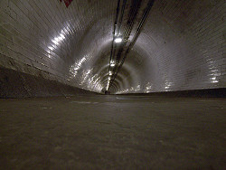
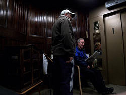

Greenwich Foot Tunnel
Useful Information
 |
| Image: the entrance with its red walls and glass cuppola. |
| Location: |
Southern entrance: at the southern shore of the Thames, in Greenwich, close to the Cutty Sark. Northern entrance: opposite side of Thames, |
| Open: |
Tunnel: no restrictions. Lift operating hours: Mon-Sat 7-19, Sun 10-17:30. 24-DEC, 27-DEC to 31-DEC daily 10-17. Closed on 25-DEC, 26-DEC, 01-JAN. [2008] |
| Fee: |
Tunnel: free. Lift: free. [2008] |
| Classification: | |
| Light: | electric. |
| Dimension: |
L=1,217ft (371m), Shaft Isle of Dogs: VR=13.40m. Shaft Greenwich: VR=15.25m. |
| Guided tours: | |
| Photography: | |
| Accessibility: | |
| Bibliography: | |
| Address: | Greenwich Foot Tunnel, Cutty Sark Gardens, Greenwich, SE10 9HT. |
| As far as we know this information was accurate when it was published (see years in brackets), but may have changed since then. Please check rates and details directly with the companies in question if you need more recent info. |
|
| Last update: | $Date: 2015/11/20 13:18:37 $ |
History
| JUN-1899 | project started. | |
| 04-AUG-1902 | opened to the public. |
Description
|  |
| Image: the foot tunnel. |
The Greenwich Foot Tunnel eas designed by Sir Alexander Binnie. It was built at the turn of the 20th century, and inaugurated in August 1902. The idea was to allow the residents of south London to work in the docks on the Isle of Dogs. The construction cost £ 127,000.
Today the docks have vanished, the dockland was developed and houses big companies and banks in modern skyscapers. As a result the more than 100 years old tunnel is more popular than ever. It is used by commuters, on foot and on bike, and visited by tourists. And it is probably the cheapest attraction of London, as it is completely free.
|  |
| Image: the elevator down to the tunnel is still operated by an employee, but it has been modernized sinze the construction of the tunnel. |
The tunnel is entered through a circular buiding made of red bricks with a glass cuppola. It is brightly lit by the daylight and eventually used for the exhibition of modern art. Around the wall of the 15m deep shaft is a staircase, but if you are lazy you may use the elevator. Like from the first day the elevator is operated by a person, obviously an emplyee of the city, although it seems that this would be unnecessary with modern fully automatic elevators. The elevator has actually been rencovated since its construction and the operator has not more to do than press the button, talk with the pedestrians and read the newspaper.
The tunnel descends from the entrance at the shaft towards the center of the river Thames. In the middle, at the deepest point, it is 10.05m below the water lever during low tide and 16.15m at high tide. From here the tunnel rises again to the almost symmetrical entrance on the Isle of Dogs.
The tunnel is, similar to the tube, almost circular and covered completely by white tiles. Only the flat floor of the tunnel disturbs the circle. The ceiling is used for various conduits of enigmatic use, only two are necessary for the electric light of the tunnel.
 |
| Greenwich Foot Tunnel Gallery |
 Location by UK Streetmap
Location by UK Streetmap Search Google for "Greenwich Foot Tunnel"
Search Google for "Greenwich Foot Tunnel" Google Earth Placemark: South Entrance
Google Earth Placemark: South Entrance Greenwich foot tunnel - Wikipedia, the free encyclopedia
Greenwich foot tunnel - Wikipedia, the free encyclopedia Greenwich Foot Tunnel
Greenwich Foot Tunnel